Test Result and Analysis
Descriptive summary of data
figure 1
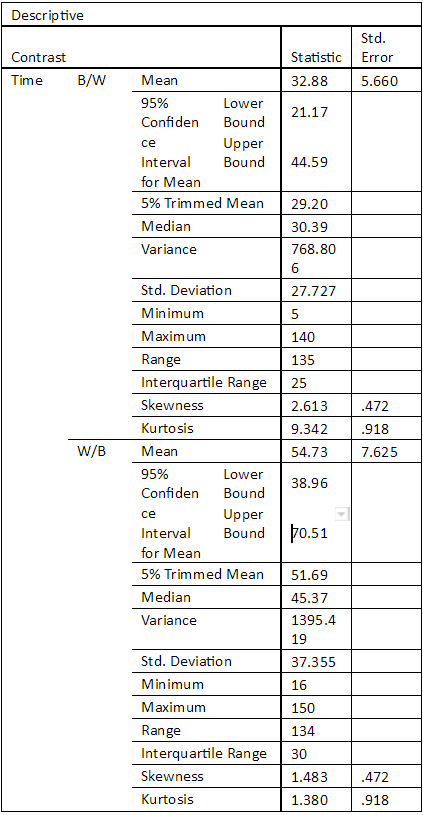
Box-plot of reverse contrasts and their data spread for time/duration
figure 2
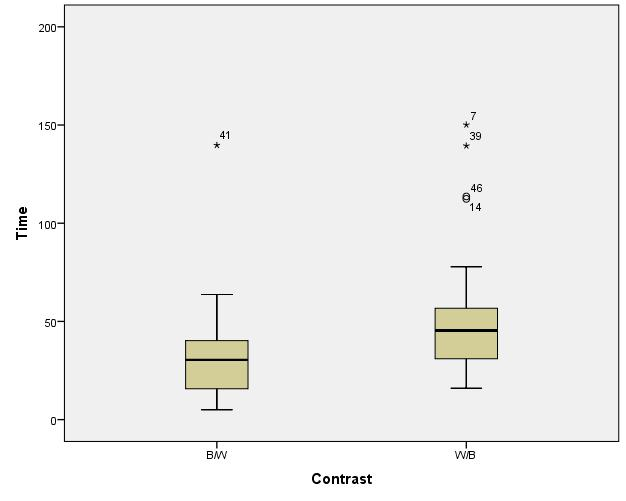
Histogram to show entire dataset distribution for time/duration
figure 3.
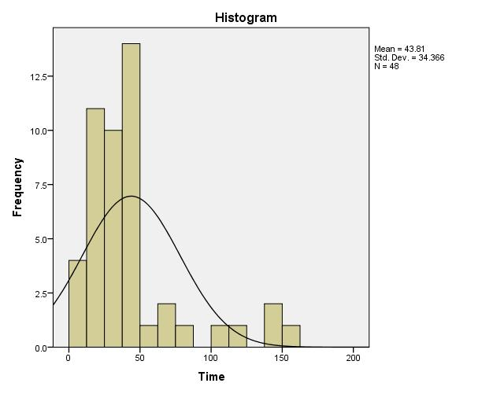
Stage 1 Summary
A first look at the data immediately tells us that there is some difference in the spread for scanning times between Black text on white background (B/W) and “White text on black background” (W/B). In figure 1 and 2 we can see that on averages people did better with B/W but whether this is a statistically significant and not random requires further testing. The type of test required for the hypothesis “Is there a significant difference in scan-reading time between articles with B/W and W/B contrast?” is a One-way ANOVA or single factor ANOVA test. However according to SPSS ANOVA guidelines there is an assumption that data needs to be approximately normally distributed. Looking at figure 3 we can see that the entire dataset is positively skewed which therefore requires us to conduct a test of normality (covered in the next section) to make sure it is normally distributed enough for an ANOVA test. Another assumption for an ANOVA test is that there are no outliers in the data. According to figure 2, there are a few outliers on both datasets. The last assumption is the variances of both B/W and W/B being homogenous.
Data normality testing
figure 4.

a. Lilliefors Significance Correction
figure 5.
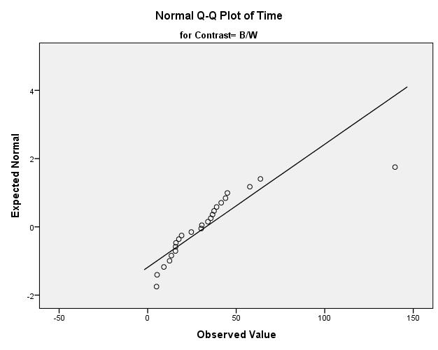
figure 6.
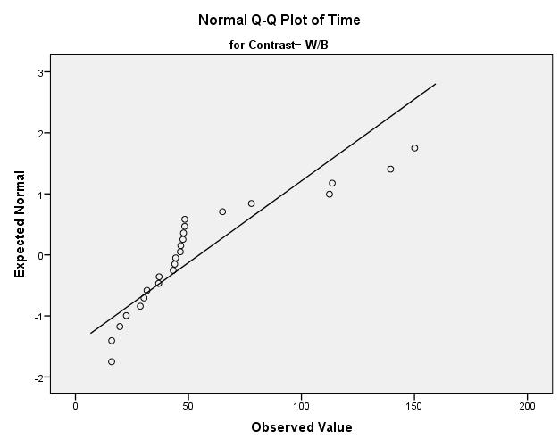
Stage 2 - Summary of normality testing
According to figure 4 results, the data set is not normally distributed. The sig value is quite a bit under 0.05 which tells us to reject the hypothesis that the data is normally distributed. This is further shown by the normal Q-Q plots for the reverse contrasts as the plots are quite a distance from the regression lines which indicates the data is not normal. This means that we cannot conduct an ANOVA test without transforming the data to be normalized in which we will discuss in the next section.
Data transformation
We decided that normalizing the entire time variable would fix both the skewness value in the data set as well as the kurtosis value (outliers). Using the rank cases facility within SPSS with the ‘Fractional Rank’ option ticked created a new variable which made the highest time/duration at 1.0 and then the rest of the times/duration ranked. Then using this ranked time variable and the idf.normal function() within ‘Compute variables’ in ‘Transform’ drop down to then generate a normalized time variable. Some descriptive statistics for the new normalized data set is shown in the next section.
Descriptive statistics of transformed data
figure 7.

figure 8.
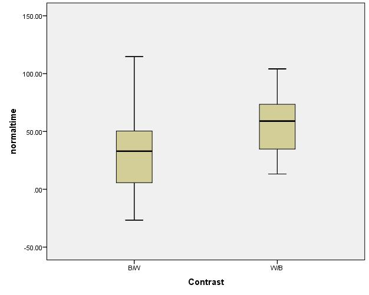
Data distribution
figure 9.
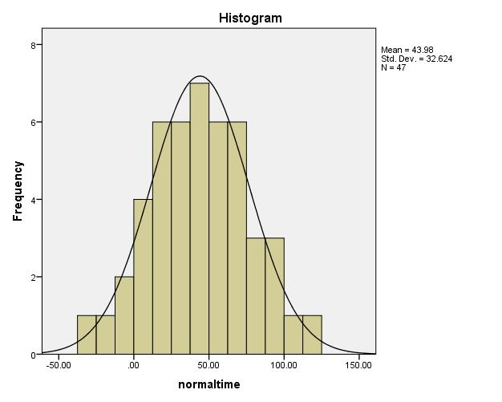
Data normality testing
figure 10.
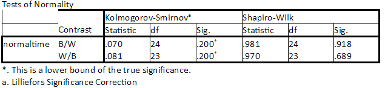
figure 11.
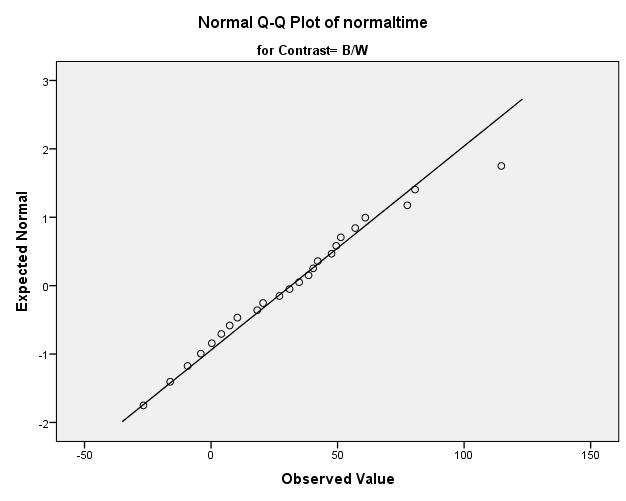
Levenes test of Homogeneity
figure 12.
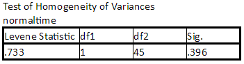
figure 13.
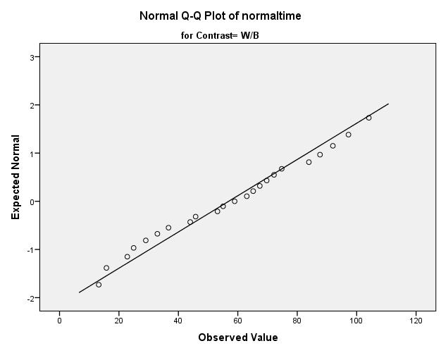
Stage 3 - Normalizing the data set
As you can see normalizing the data set had the desired effect. According
to figure 7, the skewness and kurtosis values has been reduced considerably.
The outliers issue in the data set have been removed shown in figure 8
and figure 9 shows the data in a histogram in which the data set appears
normally distributed.
To confirm this further we conducted a normality test (figure 10, 11 and 13)
on the normalized variable which shows both B/W and W/B Sig values are way
over 0.05 which means we can accept the hypothesis that the data set is
normally distributed. Figures 11 and 13 show that the data is quite close
to the regression line on the Q-Q plot for both contrast’s which indicates
the data is normal.
Another requirement for ANOVA is variance homogeneity of which we undertook
a Levene test with the data set (figure 12). The test shows that the variances
between both contrasts are indeed homogeneous with a Sig value way over .005.
The data is now ready for a one-way ANOVA test which we will compare the means
for both B/W and W/B to see whether they are statistically significant.
One-way ANOVA Test (Single-factor ANOVA
figure 14.
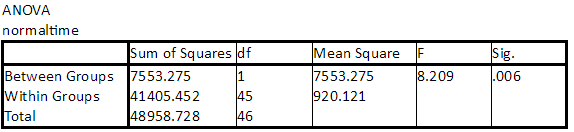
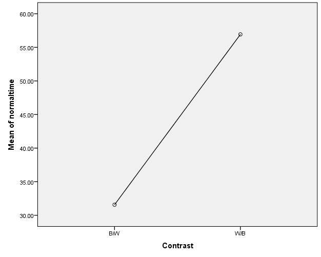
figure 16.
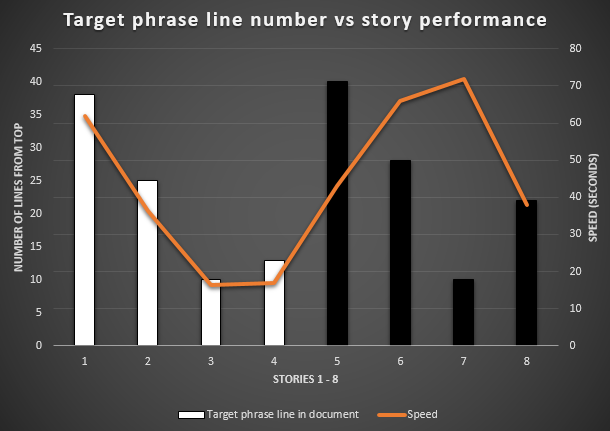
Stage 4 - Discussion of One-way ANOVA results
At first glance we can see the Sig value (p-value) for the One-way ANOVA test (figure 14) is below 0.05 which means we can reject the null hypothesis that the differences in the means is not statistically significant. In our study there appears to be a statistically significant difference in scan-reading performance between B/W and W/B articles. Further feedback from the students we were sampling found the black and white articles easier to search through besides Sonic who stated he developed software in IDE with dark backgrounds. This, however does not disprove previous findings in research we used to test this hypothesis. For one our study did not take into account the line at which the target phrase in the articles is situated. A little bit of extra explorative analysis at the data (figure 16) shows that scan-reading performance lines up almost perfectly with the B/W - and there being decreases in W/B. As a result of the random placement of target phrase - the W/B articles had the target phrase situated mostly between 20 - 45. The one discrepancy is article 7 which on average took a lot longer for students to search through even though the target phrase was on line 10. The phrase, however, was on the end of line 10 meaning the rest of the phrase was on line 11 which means the entire phrase was only in view by reading each line to line rather than scan-reading the document. I may also emphasize that the sample population was very small (6 students). The sample may data may not therefore reflect reality. This shows an error in our experiment design of looking at the one factor (contrast) that there could very well be the position factor having a considerable effect on scan reading speed. We did not take measures to i solate the target phrase position variable and for a larger sample of students to take the test. Future experiment design around this area of research would need to take these details into account.